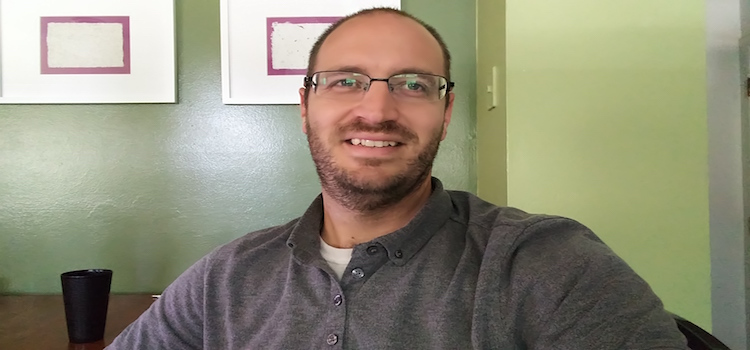

Who Am I?
I am a native to Denver, CO. I live in a suburb just outside of Denver with my wife, Laura, whom I have been married with for 10 years. We have three beautiful kids: Josiah (7), Silas (5), and Elsabeth (3). I love spending time with my family. Together we love to hike, camp, ride bikes, visit splash parks, and pretty much anything else out doors.
In addition to spending time with my family, I love to learn. I am constantly
learning about new technology, robotics, mathematics, or science. I also
enjoy woodworking (when I have time, space, and money) and anything mechanical.
I love meeting new people, so feel free to connect with me on social media: